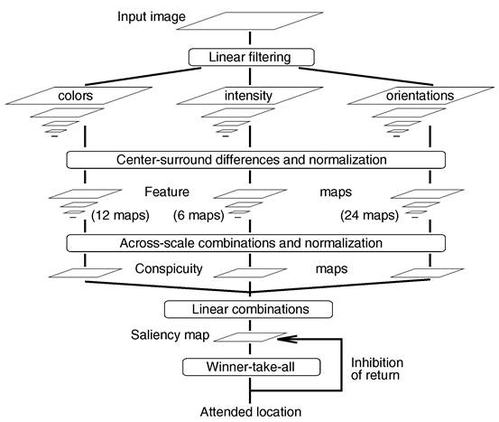
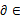
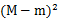
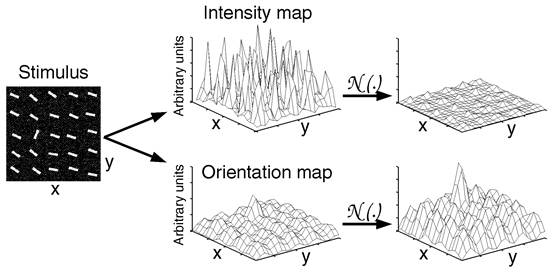
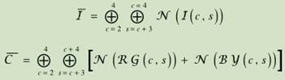
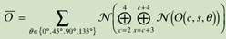
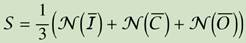
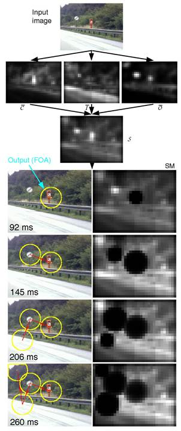

最基础也是最权威的一篇：
Itti L, Koch C, Niebur E. A model of saliency-based visual attention for rapid scene analysis[J]. Pattern Analysis and Machine Intelligence, IEEE Transactions on, 1998, 20(11): 1254-1259.
上一篇的review，写的更全面易懂一些，但是没写具体实现算法。
Itti L, Koch C. Computational modelling of visual attention[J]. Nature reviews neuroscience, 2001, 2(3): 194-203.
在上面文章方法的基础上加入了神经网络/遗传算法的概念。
Walther D, Koch C. Modeling attention to salient proto-objects[J]. Neural Networks, 2006, 19(9): 1395-1407.
这个跟之前的有很大区别，从名字看出来它基于信息最大化准则来找显著性。不过最后他的结论侧面说明了上面这些文章的模型是有道理的。
Bruce N, Tsotsos J. Saliency based on information maximization[C]//Advances in neural information processing systems. 2005: 155-162.
又是Koch带出来的文章，提出了一个新的基于图的模型，这个模型对经典模型提取特征的步骤进行了极大的简化，并宣称拥有更好的效果。
Harel J, Koch C, Perona P. Graph-based visual saliency[C]//Advances in neural information processing systems. 2006: 545-552.

Figure 1 General architecture of the model.
这篇文章引用数接近5000，可以说是最权威的模型。
It is related to the so-called “feature integration theory,” explaining human visual search strategies.
Each feature is computed by a set of linear “center-surround” operations akin to visual receptive fields.
An intensity image I is obtained as I = (r + g + b)/ 3. I is used to create a Gaussian pyramid I(), where [0..8] is the scale.
Four broadly-tuned color channels are created: R = r - (g + b)/ 2 for red, G = g - (r + b)/ 2 for green, B = b - (r + g)/ 2 for blue, and Y = (r + g)/ 2 - | r - g| / 2 - b for yellow (negative values are set to zero). Four Gaussian pyramids R(s), G(s), B(s), and Y(s) are created from these color channels.
Center-surround differences (‘’ defined previously) between a“center” fine scale c and a “surround” coarser scale s yield the feature maps.
I(c, s) = | I(c) I(s)| where c {2, 3, 4} and s = c + d, d {3, 4}.
A second set of maps is similarly constructed for the color channels, which, in cortex, are represented using a so-called “color double-opponent” system.
RG(c, s) = | (R(c) - G(c))(G(s) - R(s))|
BY(c, s) = | (B(c) - Y(c))(Y(s) - B(s))|
另外还有一组方向上的features maps，利用Gabor pyramids并选取4个角度来做。
标准化是一个三步走的策略
1) normalizing the values in the map to a fixed range [0..M], in order to eliminate modality-dependent amplitude differences;
2) finding the location of the map’s global maximum M and computing the average m of all its other local maxima; and
3)globally multiplying the map by 
标准化例子：

合成分两步, 先三类features maps分别合成：


最后三类合并：

